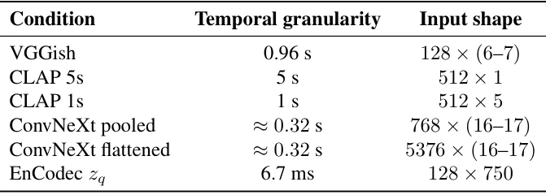
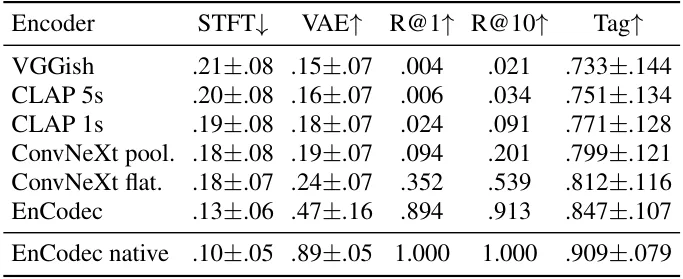
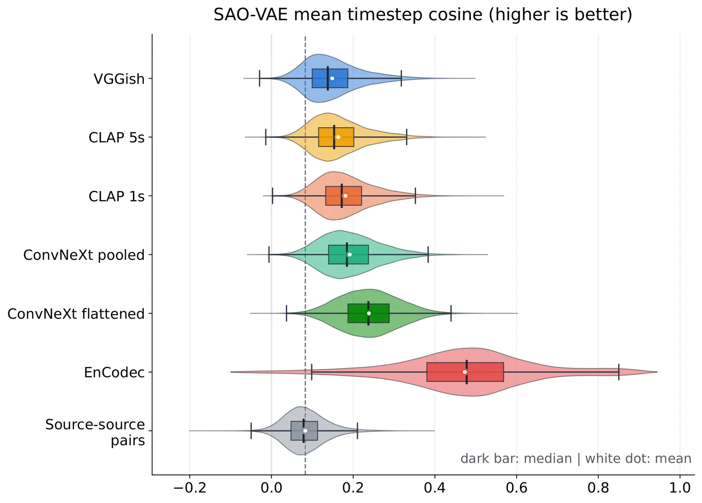

O problema da caixa-preta
Encoders de áudio pré-treinados viraram peças de Lego da inteligência artificial: você pega um modelo treinado para uma tarefa, congela seus pesos e reutiliza suas representações em problemas completamente diferentes. VGGish classifica sons, CLAP alinha áudio com texto, EnCodec comprime formas de onda. Mas o que exatamente sobrevive dentro desses embeddings? Quanta informação da gravação original ainda está lá, acessível, mesmo que o modelo não tenha sido treinado para preservá-la?
A pergunta importa por dois motivos práticos. Primeiro, quando você reutiliza um encoder em uma tarefa desconhecida durante o treinamento, precisa saber quais propriedades do sinal ele consegue carregar. Segundo, em contextos sensíveis — licenciamento musical, privacidade — é comum distribuir embeddings em vez do áudio original. A suposição implícita é que a representação abstrai o suficiente para proteger a fonte. Mas será?
Marios Glytsos e Brian McFee, do Music and Audio Research Laboratory da New York University, propõem uma auditoria de inversão: treinar um decoder para reconstruir a gravação original a partir do embedding congelado. Se a reconstrução funciona, é evidência de que informação específica da fonte sobreviveu. Se falha, pode ser limitação do decoder — mas já diz algo sobre o que é acessível.
Quatro encoders, três objetivos de treinamento
Os autores comparam quatro encoders representativos. VGGish é um classificador clássico, treinado no AudioSet há anos e ainda amplamente usado como baseline. ConvNeXt é um classificador mais recente, também treinado no AudioSet, que virou representação de propósito geral. CLAP é um modelo contrastivo audio-texto, treinado para alinhar embeddings de áudio e linguagem. EnCodec é um codec neural, treinado explicitamente para reconstruir formas de onda com alta fidelidade.
Esses objetivos de treinamento impõem pressões diferentes sobre o que preservar. Classificação recompensa informação discriminativa: o modelo precisa separar classes, não necessariamente guardar detalhes locais do sinal. Aprendizado contrastivo enfatiza semântica alinhada com linguagem: o embedding deve capturar o que pode ser descrito em palavras. Reconstrução exige detalhe local: pitch, timbre, ritmo, estrutura temporal fina.
As interfaces expostas também variam drasticamente. VGGish produz um único vetor de 128 dimensões para cada clipe de áudio. ConvNeXt expõe 2048 dimensões por clipe. CLAP gera 512 dimensões. EnCodec, por outro lado, produz uma sequência densa de 128 tokens por segundo, cada um com 128 dimensões — uma representação muito mais rica em resolução temporal.

Reconstrução como auditoria padronizada
A ideia central é treinar um decoder condicional que recebe o embedding e tenta gerar o áudio original correspondente. Como o encoder não precisa ser injetivo — múltiplas entradas podem produzir o mesmo embedding — inversão determinística exata nem sempre está bem definida. Por isso, um decoder generativo condicional faz sentido: ele usa o embedding para estrutura preservada e recorre a um prior aprendido de áudio para detalhes ambíguos.
Os autores escolheram usar o Stable Audio Open, um modelo de difusão latente pré-treinado para sintetizar áudio a partir de condicionamento textual altamente abstrato. Esse decoder já tem um prior expressivo sobre como áudio natural soa, o que o torna uma sonda forte para investigar o que um embedding consegue suportar. Importante: não é um ataque adaptativo de pior caso. Não tentam explorar a estrutura específica de cada encoder para extrair o máximo de informação. É uma auditoria padronizada, que permite comparações justas entre representações.
O procedimento é o seguinte: congelam o encoder, pegam o embedding de um clipe de 5 segundos de música estéreo a 44.1 kHz, e treinam o decoder do Stable Audio Open para reconstruir o áudio original a partir desse embedding. O decoder já vem com um autoencoder variacional (VAE) que comprime áudio para um espaço latente; o modelo de difusão opera nesse espaço. Os autores adaptam o mecanismo de condicionamento do decoder para aceitar os embeddings dos encoders testados, mantendo o resto da arquitetura congelada.
Testando no Million Song Dataset
Os experimentos usam o Million Song Dataset (MSD), uma coleção massiva de metadados e características de áudio de um milhão de músicas contemporâneas. Os autores treinam os decoders em clipes de 5 segundos extraídos desse conjunto e avaliam em um conjunto de teste separado.
A avaliação combina métricas objetivas e subjetivas. Para qualidade perceptual, usam o ViSQOL, que estima a qualidade de áudio percebida. Para similaridade espectral, calculam distâncias de Fréchet no espaço latente do próprio VAE do Stable Audio Open e também no espaço de um encoder PANNs treinado no AudioSet. Para verificar se a reconstrução preserva identidade da fonte, fazem recuperação pareada: dado o áudio reconstruído, conseguem encontrar o áudio original entre milhares de candidatos? Medem recall@1 e recall@10.
Também avaliam se características musicais de alto nível sobrevivem. Usam o MusicNN, um tagger automático de música, para extrair as 10 tags principais do áudio original e da reconstrução, e medem a sobreposição. Isso captura se gênero, instrumentação e mood são preservados, mesmo que detalhes espectrais mudem.

Diferenças claras entre famílias de encoders
Os resultados mostram diferenças nítidas. EnCodec, treinado para reconstrução, permite recuperação muito superior em todas as métricas. Usando seu decoder nativo, atinge ViSQOL de 3.91 (em uma escala onde 5 é transparente). Mesmo usando o decoder compartilhado do Stable Audio Open, EnCodec alcança ViSQOL de 3.02, muito acima dos classificadores.
VGGish e ConvNeXt, ambos treinados para classificação no AudioSet, ficam atrás. VGGish atinge ViSQOL de 1.86, ConvNeXt 2.06. CLAP, o modelo contrastivo, fica em 2.23. As diferenças são consistentes em distâncias de Fréchet: EnCodec produz reconstruções muito mais próximas do original no espaço latente do VAE e no espaço do PANNs.
Mas mesmo os embeddings altamente comprimidos e orientados a tarefas preservam especificidade mensurável da fonte. VGGish, com apenas 128 dimensões por clipe, ainda permite recall@1 de 0.34: em 34% dos casos, a reconstrução é suficientemente específica para recuperar o áudio original entre milhares de candidatos. ConvNeXt atinge 0.50, CLAP 0.59, EnCodec 0.81. Nenhum deles foi treinado para preservar identidade da gravação, mas a informação está lá.

Resolução temporal e espectral importam
Dentro de cada família de encoder, os autores observam que expor estrutura temporal ou espectral mais fina melhora consistentemente a recuperação. EnCodec expõe 640 tokens de condicionamento para um clipe de 5 segundos — 128 tokens por segundo. VGGish, ConvNeXt e CLAP expõem vetores únicos ou sequências muito curtas.
Essa diferença na interface não é apenas sobre dimensionalidade total. É sobre granularidade: EnCodec permite que o decoder acesse informação localizada no tempo, frame a frame. Os classificadores colapsam toda a informação em um vetor global, perdendo estrutura temporal fina. Mesmo que esse vetor tenha milhares de dimensões, ele não pode dizer ao decoder o que acontece em cada instante.
Os autores não testam variantes com resolução intermediária no mesmo encoder, mas a comparação entre encoders sugere fortemente que interfaces mais ricas em resolução temporal facilitam a reconstrução. Isso tem implicações para o design de representações: se você quer reutilizar um encoder em tarefas que exigem estrutura temporal, vale a pena expor sequências em vez de vetores globais.

Conteúdo musical de alto nível sobrevive
Mesmo quando a qualidade perceptual cai, características musicais de alto nível são preservadas. A métrica de sobreposição de tags do MusicNN mostra que VGGish atinge 0.49, ConvNeXt 0.53, CLAP 0.56, EnCodec 0.64. Isso significa que cerca de metade das 10 tags principais — gênero, instrumentação, mood — são compartilhadas entre original e reconstrução, mesmo para os classificadores comprimidos.
Isso faz sentido: esses modelos foram treinados para capturar exatamente esse tipo de informação semântica. VGGish e ConvNeXt aprenderam a discriminar entre classes de som; CLAP aprendeu a alinhar áudio com descrições textuais. Gênero, instrumentos e mood são discriminativos e descritíveis. O que eles perdem é detalhe espectral fino, textura temporal, nuances de timbre — informação que não era necessária para suas tarefas de treinamento.
Mas o fato de que essa informação de alto nível sobrevive tem implicações. Se você compartilha um embedding de VGGish em vez do áudio original, achando que está protegendo a fonte, um adversário ainda pode reconstruir algo que soa como a mesma música, no mesmo gênero, com instrumentação similar. Não será uma cópia perfeita, mas pode ser suficiente para violar privacidade ou direitos autorais em alguns contextos.
O que o paper não mostra
Os autores são claros sobre o escopo. Primeiro, focam em música. Música instrumental já está dentro do domínio do decoder pré-treinado, o que reduz o deslocamento de distribuição. Fala, sons ambientes, áudio de vídeo podem se comportar diferente. Segundo, usam um decoder específico, o Stable Audio Open. Decoders mais fortes, ou decoders treinados especificamente para cada encoder, podem recuperar mais informação.
Terceiro, não medem vazamento de privacidade diretamente. Mostram que reconstrução é possível, mas não quantificam o risco em aplicações específicas. Se você compartilha embeddings de conversas privadas, o risco pode ser diferente do que compartilhar embeddings de música licenciada. Quarto, não exploram o espaço completo de encoders. Há muitos outros modelos, muitas outras arquiteturas, muitos outros objetivos de treinamento.
Quinto, a auditoria é passiva: treina um decoder em pares fonte-embedding, mas não tenta ataques adversariais ativos. Um adversário com acesso ao encoder pode gerar embeddings sintéticos, explorar gradientes, ou usar técnicas de inversão de modelo mais sofisticadas. Os resultados aqui são um piso, não um teto, do que é reconstruível.
Utilidade downstream não revela o que sobrevive
O ponto central do paper é que utilidade downstream não diz tudo. VGGish é útil para classificação de áudio, CLAP é útil para busca audio-texto, mas nenhum deles foi avaliado quanto a quanta informação da fonte eles carregam além do necessário para suas tarefas. A auditoria de inversão revela essa informação residual.
Isso importa para duas comunidades. Para quem projeta encoders e quer reutilizá-los, saber o que sobrevive ajuda a escolher a representação certa para cada tarefa. Para quem compartilha embeddings em vez de áudio, saber o que é reconstruível ajuda a avaliar riscos de privacidade e direitos autorais. A abstração não é proteção automática.
Os autores sugerem que trabalho futuro deve estender a análise além de música, para famílias mais amplas de encoders e medidas mais diretas de vazamento de privacidade. Mas o método — auditoria de inversão com decoder padronizado — é geral e pode ser aplicado a qualquer encoder de áudio. É uma ferramenta de diagnóstico, não uma solução, mas uma ferramenta útil.
O que fica
- Embeddings de classificação (VGGish, ConvNeXt) e contrastivos (CLAP) preservam informação suficiente para reconstruir características musicais de alto nível, mesmo sendo altamente comprimidos.
- EnCodec, treinado para reconstrução, permite recuperar muito mais detalhes da fonte original que modelos orientados a tarefas específicas.
- Maior resolução temporal ou espectral na interface do encoder melhora consistentemente a qualidade da reconstrução.
- A auditoria padronizada não busca o pior caso: reconstruções adaptativas podem extrair ainda mais informação dos embeddings.
Paper original: How Much Audio Is Left In An Embedding? An Inversion Audit Of Audio Encoders
Comentários
Nenhum comentário ainda. Seja o primeiro.